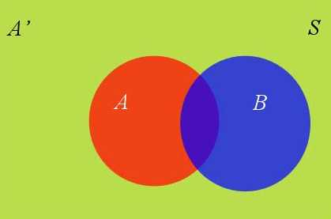
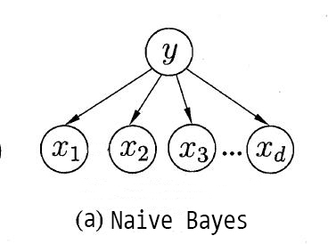
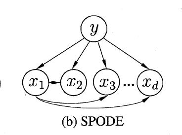
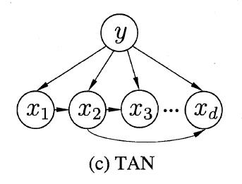

机器学习-贝叶斯分类器
贝叶斯分类器
基础知识：什么是贝叶斯定理
这现实生活中的问题，大部分都是“逆概率”问题。因为生活中绝大多数决策面临的信息都是不全的，我们手中只有有限的信息。既然无法得到全面的信息，我们就只能在信息有限的情况下，尽可能做出一个好的预测。
比如天气预报说，明天降雨的概率是30%，这是什么意思呢？我们无法像计算频率概率那样，重复地把明天过上100次，然后计算出大约有30次会下雨（下雨的天数/总天数），而是只能利用有限的信息（过去天气的测量数据），用贝叶斯定理来预测出明天下雨的概率是多少。
同样的，在现实世界中，我们每个人都需要预测。想要深入分析未来、思考是否买股票、政策给自己带来哪些机遇、提出新产品构想，或者只是计划一周的饭菜。
贝叶斯定理就是为了解决这些问题而诞生的，它可以根据过去的数据来预测出未来事情发生概率。贝叶斯定理的思考方式为我们提供了有效的方法来帮助我们做决策，以便更好地预测未来的商业、金融、以及日常生活。
贝叶斯定理：
比如我经常找你聊天，那我是不是喜欢你呢？（举例而已，我没那么傻，而且现在没人经常跟我聊天，除了某hc）
也就是说，我没要求解 ”我喜欢你“ 的概率，用事件A表示，我们已知的事件是 ”我经常跟你聊天“ ，记为事件B，那么 就是我经常找你聊天后我喜欢你的概率。
先验概率与可能性函数
我们把 称为"先验概率"（Prior probability），也就是在不知道B事件的前提下，我们对A事件概率的一个主观判断。对应这个例子里就是在不知道 “我经常找你聊天” 的前提下，来主观判断出我喜欢一个人的概率。这里我们假设是50%，也就是喜不喜欢对半分。
称为"可能性函数"（Likelyhood），这是一个调整因子，也就是新信息B带来的调整，作用是将先验概率（之前的主观判断）调整到更接近真实概率。可能性函数可以理解为在对新信息进行解读后，对先验概率的一个调整。如果"可能性函数" ，意味着"先验概率"被增强，事件A的发生的可能性变大；如果"可能性函数"=1，意味着B事件无助于判断事件A的可能性；如果"可能性函数"<1，意味着"先验概率"被削弱，事件A的可能性变小。
还是刚才的例子，根据我经常找你聊天这个新的信息，我发现我平日比较高冷，很少找人聊天，也就是对你有好感的可能性比较大（可能性函数>1）。所以我估计出"可能性函数" （具体如何估计，省去1万字，后面会有更详细科学的例子）
后验概率
代入贝叶斯公式我们可以得到 ，也就是说，在得知 “我不常找人聊天” 后，我经常找你聊天后我喜欢你的概率变为了0.75。也就是说：
全概率公式
这个公式的作用是计算贝叶斯定理中的P(B)。
如果 和 构成一个问题的全部（全部的样本空间），那么事件B的概率，就等于 和 的概率分别乘以B对这两个事件的条件概率之和。
案例
假设某种疾病的发病率是0.001，即1000人中会有1个人得病。现在有一种试剂可以检验患者是否得病，它的准确率是0.99，即在患者确实得病的情况下，它有99%的可能呈现阳性。它的误报率是5%，即在患者没有得病的情况下，它有5%的可能呈现阳性。
现在有一个病人的检验结果为阳性，请问他确实得病的可能性有多大？
病人的检验结果为阳性（新的信息）记为事件B，他得病记为事件A，
那么要求的问题就是 ，也就是已知病人的检验结果为阳性（B），他确实得病的概率(A)
这种疾病的发病率是0.001，即
试剂可以检验患者是否得病，准确率是0.99，也就是在患者确实得病的情况下(A)，它有99%的可能呈现阳性(B)，所以
试剂的误报率是5%，即在患者没有得病的情况下，它有5%的可能呈现阳性。得病我们记为事件A，那么没有得病就是事件A的反面，记为 ，所以这句话就可以表示为
那么：
生活中的贝叶斯思维
如果你仔细观察小孩学习新东西的这个能力，会发现，很多东西根本就是看一遍就会。比如我3岁的外甥，看了我做俯卧撑的动作，也做了一次这个动作，虽然动作不标准，但也是有模有样。
同样的，我告诉他一个新单词，他一开始并不知道这个词是什么意思，但是他可以根据当时的情景，先来个猜测（先验概率/主观判断）。一有机会，他就会在不同的场合说出这个词，然后观察你的反应。如果我告诉他用对了，他就会进一步记住这个词的意思，如果我告诉他用错了，他就会进行相应调整。（可能性函数/调整因子）。经过这样反复的猜测、试探、调整主观判断，就是贝叶斯定理思维的过程。
同样的，我们成人也在用贝叶斯思维来做出决策。比如，你和女神在聊天的时候，如果对方说出“虽然”两个字，你大概就会猜测，对方后面九成的可能性会说出“但是”。我们的大脑看起来就好像是天生在用贝叶斯定理，即根据生活的经历有了主观判断（先验概率），然后根据搜集新的信息来修正（可能性函），最后做出高概率的预测（后验概率）。
本章大纲
贝叶斯分类器（Bayes Classifier）是一种通过最大化后验概率进行单点估计的分类器。
这一章的内容大致如下：
贝叶斯决策论：如何计算某个样本误分类的期望损失/条件风险？贝叶斯判定准则是怎样的？什么是判别式模型？什么是生成式模型？贝叶斯定理中各个概率代表什么？估计后验概率有什么难处？
极大似然估计：如何估计类条件概率？频率学派和贝叶斯学派对参数估计有什么不同的见解？极大似然估计的思想是什么？如何处理概率连成造成的下溢？试想一下连续属性和离散属性的极大似然估计。这种估计方法有什么缺点？
朴素贝叶斯分类器：朴素贝叶斯分类器是基于什么假设的？表达式怎么写？为什么估计概率值时需要进行平滑？拉普拉斯修正是怎样的？现实任务中中如何使用朴素贝叶斯分类器？
半朴素贝叶斯分类器：半朴素贝叶斯分类器是基于什么假设的？什么是独依赖估计？独依赖分类器有哪些学习方法？AODE有什么优点？是否可以通过考虑属性之间的高阶依赖来进一步提升模型的泛化性能？
贝叶斯网络：什么是贝叶斯网络？它的结构是怎样的？如何进行模型的学习？如何对新样本进行推断？
EM算法：什么是隐变量？EM算法的步骤是怎样的？和梯度下降有什么不同？
贝叶斯决策论
贝叶斯决策论（Bayesian decision theory）是概率框架下实施决策的基本方法。具体来说，在分类任务中，贝叶斯决策论基于概率和误判损失选择出最优的类别标记。
以多分类任务为例，假设有 种标记，即 ，用 表示把一个真实标记为 的样本误分类为 所产生的损失。那么将样本 分类为 的期望损失（expected loss）或者说，在样本 上的条件风险（conditional risk）：
它描述的是，给定一个样本 ，把它分类为 需要冒多大的风险。或者说，当样本真实标记不是 时，会有多大的损失。这个损失是一个求和，每一个求和项都是某一类别的后验概率和对应误分类损失的积。
（注：书中这个地方不够细致，求和项的下标是要排除 本身的，或者，）
在单个样本条件风险的基础上，可以定义总体风险：
它描述的是，所有样本的条件风险的数学期望。其中 是一种用于产生分类结果的判断准则。
那么我们的目标就是找出能最小化总体风险 的判断准则。怎样的判断准则能满足这个要求呢？很直观地，如果一个判断准则 能最小化所有样本 的条件风险，那它对应的总体风险必然也是最小的。由此，可以得到贝叶斯判定准则（Bayes decision rule）：要最小化总体风险，只需在每个样本上选择能使对应的条件风险 最小的标记。即：
这个判断准则 称为贝叶斯最优分类器（Bayes optimal classifier），对应的总体风险 称为贝叶斯风险（Bayes risk），而 则反映了分类器所能达到的最好性能，也即模型精度的理论上限。
进一步地，如果我们学习模型的目标是令分类错误率最小，那么分类正确时误分类损失 为 0，反之为1。这是条件风险就是：
要令风险最小，我们只需要选择使样本 后验概率最大的一个类别标记就可以了。
问题在于，怎样获取后验概率呢？
事实上，从概率的角度来理解，机器学习的目标就是基于有限的训练样本集尽可能准确地估计出后验概率（当然，大多数机器学习技术无需准确估计出后验概率）。要实现这个目标，主要有两种策略：
构建判别式模型（discriminative models）：给定样本 ，直接对后验概率 建模来预测 。这类模型包括决策树、BP神经网络、支持向量机等等。
构建生成式模型（generative models） ：给定样本 ，先对联合概率分布 建模，然后再利用联合概率计算出后验概率 ，也即 。
又因为联合概率 ，由此，能得到贝叶斯定理：
在贝叶斯定理中，每个概率都有约定俗成的名称：
是类标记 相对于样本 的条件概率，也由于得自 的取值而被称作 的后验概率。
是样本 相对于类标记 的类条件概率（class-conditional probability），或称为似然（likelihood），也由于得自 的取值而被称作 的后验概率。
是 的先验概率（也称为边缘概率），之所以称为"先验"是因为它不考虑任何 方面的因素。在这里又称为类先验（prior）概率。
是 的先验概率。在这里是用作归一化的证据（evidence）因子，与类标记无关。
有了贝叶斯定理，如何估计后验概率 的问题就转化为如何计算类先验概率 和类条件概率 了。
类先验概率 表示的是样本空间中各类样本的比例，根据大数定律，当训练集包含足够多的独立同分布样本时，类先验概率可以直接通过训练集中各类样本出现的频率进行估计。
类条件概率 的情况就复杂多了，它涉及到类 中样本 所有属性的联合概率，假设每个样本有 个二值属性，那么可能的取值组合就多达 个，这个数目可能远多于训练集的规模，也就意味着很多样本的取值没有在训练集中出现，所以直接用训练集出现的频率进行估计是不可行的。必须注意未被观测到和出现概率为0的区别。
注意，上述讨论中，均假设属性是离散型，对于连续型属性，只需把概率质量函数 换为概率密度函数 就可以了。
极大似然估计
估计类条件概率的一种常用策略是：先假定该类样本服从某种确定的概率分布形式，然后再基于训练集中的该类样本对假定的概率分布的参数进行估计。比方说假定该类样本服从高斯分布，那么接下来就是利用训练集中该类样本来估计高斯分布的参数——均值和方差。
具体来说，如果类 的样本服从参数为 （可能不止一个参数）的分布，那么我们从样本空间抽取到该类的某一个样本 的概率就是 。使用 来表示训练集中类 的子集，可以定义数据集 的似然（likelihood）为：
由于连乘操作容易造成下溢，实际任务中通常使用对数似然（log-likelihood）代替：
所谓极大似然估计（Maximum Likelihood Estimation，简称MLE）就是找出令似然最大的参数 。也即从 的所有可能取值中找到一个令所抽取样本出现的可能性最大的值。
求解的过程也很简单，就是求似然函数的导数，令导数为0，得到似然方程，解似然方程得到最优解，也即该类样本分布的参数。
特别地，对于参数估计，频率主义学派（Frequentist）和贝叶斯学派（Bayesian）有不同的见解。前者认为，参数虽然未知，却是客观存在的固定值，因此可以用优化似然函数等准则确定参数值；后者认为，参数是未观测到的随机变量，参数本身也存在分布。所以可以先假定参数服从一个先验分布，然后再根据观测到的数据计算参数的后验分布。这一节讨论的极大似然估计方法源于频率主义学派。
尽管极大似然估计能使我们求取类条件概率的过程变得相对简单，但它有最大的一个缺点就是：估计结果的准确性严重依赖于所假设的概率分布形式是否符合潜在的真实数据分布。在实际任务中，我们需要利用任务所属领域的一些经验知识，全凭猜测是很容易产生误导性结果的。
朴素贝叶斯分类器
前面提到了，估计后验概率 最大的一个难处是：类条件概率 是所有属性上的联合概率，而多个属性的不同属性值组合并不一定全部囊括在训练集内，所以很难通过训练集估计。
为了避免这个障碍，朴素贝叶斯分类器（naive Bayes clssifier）采用属性条件独立性假设（attribute conditional independence assumption）。也就是说，假设所有属性相互独立，单独地对分类结果产生影响。
基于这个假设，可以把类条件概率写成连乘的形式，因此贝叶斯定理可重写为：
其中 为属性数目， 为样本 在第 个属性上的取值。
又因为 与类别无关，所以朴素贝叶斯分类器的表达式可以写为：
前面已经提到过，当训练集包含足够多独立同分布样本时，类先验概率 可以直接算出，也即训练集该类样本的数目占训练集规模的比例：
而条件概率 ，根据属性类型分离散和连续两种情况：
- 离散型属性：条件概率 可以估计为，在类别 的样本子集中，第 个属性取值为 的样本所占的比例：
- 连续性属性：替换为概率密度函数，假设第 个属性服从高斯分布，那么条件概率就写成 。我们利用类别 的样本子集在该属性上的取值算出分布的均值和方差，然后把属性取值 代入概率密度函数就可算出这个条件概率。
平滑
注意了，若某个属性值在训练集中没有与某个类同时出现过，那么它对应的条件概率 就为0。在连乘中，这就意味着整个式子值为0了，其他属性携带的信息都被抹去了。这是很常见的情况，举个例子，假设有一篇新闻应该在体育版发布的，它包含了 “罗纳尔多” 这个词，但由于我们构造分类器时，训练集中所有 “体育” 类的文本都没有出现这个词，于是，该新闻按照式（1）计算出的体育类的条件概率必定为0；而恰好 “娱乐” 类的文本中有一篇包含了这个词，那么计算出的娱乐类的条件概率就大于0，从而使得这篇新闻被误分到娱乐版发布了，这显然很不合理。
此时，我们就需要对概率值进行平滑（smoothing）了，最常用的是拉普拉斯修正（Laplacian correction），假设训练集中包含 个类别，第 个属性包含 种取值，则拉普拉斯修正把式（2）和式（3）修改为：
再回想一下上面新闻分类的例子，尽管所有 “体育” 类的文本都没有出现 “罗纳尔多” 这个词，但使用拉普拉斯修正后，这个词（文本分类中每个词是一个属性）对应的条件概率就不为0了，而是一个很小的值；而该新闻的其他词，比如 “足球”、“球场” 等等在体育类新闻中都出现得很频繁，所以最后累乘计算出的体育类的类条件概率就大于其他类，从而能正确地进行划分了。
拉普拉斯修正保证了不会因为训练集样本不充分导致概率估值为零。但它实际上是假设了类别和属性值是均匀分布的，相当于额外引入了先验，这个假设并不总是成立。不过当训练集规模足够大时，引入先验所产生的影响会变得非常低。也可以理解为，此时式（4）和式（5）的分母很大，使得分子中引入的1带来的变化非常小，此时概率的估计值会趋向于真实值。
实际使用
朴素贝叶斯分类器和前面学习的模型有一个不同的地方就是，我们并不是基于训练集和某些算法来学习模型的参数；而是利用训练集来算出一些概率，在预测时，根据新样本的情况，使用不同的概率计算出它被分到各个类的后验概率，然后取后验概率最大的一个类作为结果。
在实际任务中，有两种使用方式：
查表：若对预测速度要求较高，可以先根据训练集把所有涉及到的概率计算出来，然后存储好，在预测新样本时只需要查表然后计算就可以了。
懒惰学习：若数据更替比较频繁，也可以理解为用训练集算出的概率可能很快就失效了，更新换代的速度很快，那就采取懒惰学习（lazy learning）的方式，仅当需要预测时才计算涉及到的概率。
特别地，当我们采取了预先计算所有概率的方式时，如果有新数据加入到训练集，我们只需要更新新样本涉及到的概率（或者说计数）就可以了，可以很方便地实现增量学习。
半朴素贝叶斯分类器
朴素贝叶斯分类器基于属性条件独立性假设，每个属性仅依赖于类别，如上图。但这个假设往往很难成立的，有时候属性之间会存在依赖关系，这时我们就需要对属性条件独立性假设适度地进行放松，适当考虑一部分属性间的相互依赖信息，这就是半朴素贝叶斯分类器（semi-naive Bayes classifier）的基本思想。
独依赖估计（One-Dependent Estimator，简称ODE）是半朴素贝叶斯分类器最常用的一种策略，它假设的是每个属性在类别之外最多仅依赖于一个其他属性。也即：
其中 是属性 依赖的另一属性，称为 的父属性。若已知父属性，就可以按式（5）来计算了。现在问题转化为如何确定每个属性的父属性？
这里介绍两种产生独依赖分类器的方法：
SPODE
在SPODE（Super-Parent ODE）中，所有属性都依赖于一个共同的属性，称为超父（super-parent），比方说上图中的 。可以通过交叉验证等模型选择方法来确定最合适的超父属性。
TAN
TAN（Tree augmented naive Bayes）则是一种基于最大带权生成树（maximum weighted spanning tree）的方法，包含以下四个步骤：
计算任意两个属性间的条件互信息（conditional mutual information）：
以属性为节点构建完全图，每条边的权重为对应的条件户信息。
构建此完全图的最大带权生成树。选一个节点作为根节点，把边转换为有向边。
加入类别节点 ，并增加从 到每个属性的有向边。
AODE
特别地，有一种更为强大的独依赖分类器——AODE(Average One-Dependent Estimator)，它基于集成学习机制。无须通过模型选择来确定超父属性，而是尝试将每个属性都作为超父属性来构建模型，然后把有足够训练数据支撑的SPODE模型集成起来导出最终结果。
类似于朴素贝叶斯分类器，AODE无需进行模型选择，既可以通过预计算来节省预测时间，又可以采取懒惰学习，需要预测时再进行计数，并且可以容易地实现增量学习。
高阶依赖
ODE假设每个属性最多依赖类别以外的另一属性，但如果我们继续放宽条件，允许属性最多依赖类别以外的 k 个其他属性，也即考虑属性间的高阶依赖，那就得到了 kDE。
是不是考虑了高阶依赖就一定能带来性能提升呢？并不是这样的。随着 k 的增加，要准确估计条件概率 所需的训练样本会呈指数上升。如果训练样本不够，很容易陷入高阶联合概率的泥沼；但如果训练样本非常充足，那就有可能带来泛化性能的提升。
贝叶斯网（没讲，应该）
贝叶斯网（Bayesian network）亦称信念网（belief network），它借助有向无环图（Directed Acyclic Graph，简称DAG）来刻画属性之间的依赖关系，并使用**条件概率表（Conditional Probability Table，简称CPT）**来描述属性的联合概率分布。
贝叶斯网的学习包括结构的学习和参数的学习，而预测新样本的过程则称为推断（inference）。这部分内容设计到一些后面章节，相对复杂一些，所以暂且放下，之后有时间再写详细的笔记。
EM算法（没讲，应该）
前面讨论的极大似然估计方法是一种常用的参数估计方法，它是假设分布的形式，然后用训练样本来估计分布的参数。但实际任务中，我们遇到一个很大的问题就是训练样本不完整。这时就需要用到EM（Expectation-Maximization）算法了。
所谓不完整的样本，说的是这个样本某些属性的值缺失了。将每个属性的取值看为一个变量，那么缺失的就可以看作“未观测”变量，比方说有的西瓜根蒂脱落了，没办法看出根蒂是“蜷缩”还是“硬挺”，那么这个西瓜样本的根蒂属性取值就是一个“未观测”变量，更准确地说，称作隐变量（latent variable）。
整个训练集可以划分为已观测变量集 和隐变量集 两部分。按照极大似然的思路，我们依然是想找出令训练集被观测到的概率最大的参数 。也即最大化对数似然：
但是，由于 是隐变量，我们没办法观测到，所以上面这个式子实际是没法求的。
怎么办呢？EM算法的思路很简单，步骤如下：
- 设定一个初始的
- 按当前的 推断隐变量 的（期望）值
- 基于已观测变量 和 步骤2得到的 对 做最大似然估计得到新的
- 若未收敛（比方说新的 与旧的 相差仍大于阈值），就回到步骤2，否则停止迭代
EM算法可以看作是用坐标下降（coordinate descent）法来最大化对数似然下界的过程，每次固定 或者 中的一个去优化另一个，直到最后收敛到局部最优解。
理论上，用梯度下降也能求解带隐变量的参数估计问题，但按我的理解，由于隐变量的加入，使得求导这个步骤非常困难，计算也会随着隐变量数目上升而更加复杂，EM算法避免了这些麻烦。
补充内容
朴素贝叶斯分类器的属性条件独立性假设在现实中很难成立，但事实上它在大多数情形下都有不错的性能。关于这点，有以下两种解释：
- 对分类任务来说，只需各类别的条件概率排序正确，即使概率值不准确，也可以产生正确的分类结果；
- 若属性间的相互依赖对所有类别影响都相同，或者依赖关系互相抵消，则属性条件独立性假设在降低开销的同时不会给性能带来负面影响；
注意，本章讨论的贝叶斯分类器和一般意义上的贝叶斯学习（Bayesian learning）是有很大差别的，本章讨论的贝叶斯分类器只是通过最大化后验概率来进行单点估计，获得的仅仅是一个数值；而贝叶斯学习则是进行分布估计或者说区间估计，获得的是一个分布。
参考
https://zhuanlan.zhihu.com/p/134089340
https://github.com/Vay-keen/Machine-learning-learning-notes
https://github.com/familyld/Machine_Learning
https://zhuanlan.zhihu.com/p/25994179
https://leovan.me/cn/2018/12/ensemble-learning/
https://easyai.tech/ai-definition/ensemble-learning/
https://zhuanlan.zhihu.com/p/72415675
https://www.zhihu.com/question/63492375
https://www.zhihu.com/question/27068705
https://www.zhihu.com/question/19725590/answer/241988854
https://tangshusen.me/2018/10/27/SVM/
https://www.joinquant.com/view/community/detail/a98b7021e7391c62f6369207242700b2
https://zhuanlan.zhihu.com/p/79531731
https://blog.csdn.net/zc02051126/article/details/49618633
https://zhuanlan.zhihu.com/p/127022333
https://0809zheng.github.io/2020/03/30/ridge.html
https://www.cnblogs.com/wuliytTaotao/p/10837533.html
https://link.springer.com/referenceworkentry/10.1007/978-1-4899-7687-1_910#Sec13186
http://palm.seu.edu.cn/zhangml/files/mla11-mll.pdf
https://blog.csdn.net/zwqjoy/article/details/80431496
https://ryuchen.club/posts/0x000034/ (推荐）
https://zhuanlan.zhihu.com/p/78798251
https://zhuanlan.zhihu.com/p/622244758
https://www.biaodianfu.com/hierarchical-clustering.html
https://zhuanlan.zhihu.com/p/411533418
https://zhuanlan.zhihu.com/p/33196506
https://www.cnblogs.com/wry789/p/13125658.html
https://blog.csdn.net/qq_41485273/article/details/113178117
https://www.jianshu.com/p/7d4323c28716
http://lunarnai.cn/2019/01/02/watermelon-chap-13/
https://zhuanlan.zhihu.com/p/411533418
https://www.huaxiaozhuan.com/统计学习/chapters/12_semi_supervised.html
https://blog.csdn.net/tyh70537/article/details/80244490
https://zhuanlan.zhihu.com/p/37747650
https://blog.csdn.net/qq_40722827/article/details/104515955
https://www.cnblogs.com/dyl222/p/11055756.html
https://www.zhihu.com/tardis/zm/art/392908965
https://blog.csdn.net/j123kaishichufa/article/details/7679682
https://www.cnblogs.com/heaad/archive/2011/01/02/1924088.html
https://www.cnblogs.com/stevenlk/p/6543628.html
等等